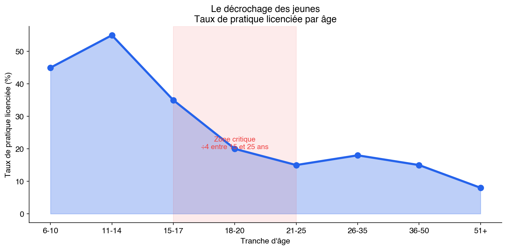

La densité française
La France investit plus d’argent public dans le sport que n’importe quel pays d’Europe. Elle forme plus de licenciés que n’importe quel pays de sa taille. Elle maille son territoire de clubs, d’associations et d’équipements avec une capillarité que le monde entier lui envie. Et elle produit des résultats moyens. C’est le paradoxe central de cet essai, et il faut commencer par le mesurer.
1. Les chiffres de la machine
Le sport français repose sur un tissu associatif sans équivalent en Europe par sa densité. On dénombre environ 360 000 associations sportives actives sur le territoire, un chiffre qui place la France dans une situation singulière : le sport n’y est pas un service marchand mais un fait associatif, ancré dans la vie communale depuis la loi de 1901. Ces associations encadrent 17,2 millions de licenciés répartis dans les fédérations agréées par le ministère des Sports — un ratio d’environ un licencié pour quatre habitants, enfants compris.
Ce maillage s’appuie sur 3,5 millions de bénévoles, colonne vertébrale d’un système que ni l’État ni le marche ne pourraient faire fonctionner seuls. Du club de handball rural qui ouvre ses portes trois soirs par semaine au comité départemental qui organise les compétitions le week-end, le bénévole est le rouage invisible sans lequel la machine s’arrête.
L’infrastructure physique est à l’avenant. La France compte 332 754 équipements sportifs recensés, soit environ 4,9 pour 1 000 habitants. Ce chiffre inclut 41 780 terrains de grands jeux, 6 373 bassins de natation, 18 557 salles multisports et 38 775 courts de tennis — tout l’arsenal matériel qui permet à un enfant de Gueret ou de Charleville-Mezieres d’accéder à une pratique sportive encadrée. Mais un chiffre de la Cour des comptes (rapport annuel 2025) tempéré cette impression de puissance : 86 % de ces équipements ont plus de vingt ans, et 32 % des installations antérieures a 1985 n’ont jamais été rénovées. La quantite est là. La qualite vieillit.
Le financement public acheve de dessiner les contours de cette machine. La dépense sportive publique atteint 15,8 milliards d’euros par an selon la Cour des comptes (2022), dont 7,6 milliards pour l’État (incluant 6,3 milliards pour l’Éducation nationale et l’enseignement supérieur) et 8,2 milliards pour les collectivités territoriales — essentiellement le bloc communal. C’est là dépense publique en faveur du sport la plus élevée de l’Union européenne en valeur absolue : 0,6 % du PIB, contre 0,4 % en moyenne européenne. Ce dernier chiffre est le plus révélateur : ce sont les mairies qui construisent les gymnases, qui subventionnent les clubs, qui mettent a disposition les équipements. Le sport français est, dans sa materialite quotidienne, un sport municipal. Et c’est un sport qui coute cher à la collectivite — plus cher qu’ailleurs en Europe — sans que ce surcout se traduise mécaniquement en résultats superieurs.
A ces dépenses publiques s’ajoutent les dépenses privees des menages et des entreprises. Le poids économique du sport dans son ensemble représente environ 2,6 % du PIB, soit pres de 65 milliards d’euros. Ce chiffre englobe les dépenses des menages en articles de sport, les droits televisuels, le sponsoring, les salaires des sportifs professionnels et l’ensemble de la filière économique liee au sport.
Le détail de la haute performance est plus révélateur encore. L’Agence nationale du sport dispose de 461 millions d’euros en 2024 (ramenés à 415 millions en 2025, soit une baisse de 10 %), dont 114 millions fléchés vers la haute performance. Mais l’ANS n’est que la partie visible. Les 1 600 Conseillers Techniques Sportifs (CTS), agents de l’État mis à disposition des fédérations, coûtent 120 à 130 millions d’euros de masse salariale annuelle. L’INSEP fonctionne avec un budget réel de 55 à 60 millions. Les douze CREPS cumulent 80 à 100 millions. Au total, la France consacre 350 à 400 millions d’euros par an à sa haute performance sportive – soit environ trois fois le budget de UK Sport (374 millions de livres pour le cycle Paris, mais sur quatre ans, pas un). Pour des résultats historiquement comparables ou inférieurs en médailles d’or. La Cour des comptes le pointait déjà en 2013 : le saupoudrage et la dispersion des moyens sur 119 disciplines reconnues (dont quarante non olympiques) diluent l’investissement.
Et l’argent arrive mal aux athlètes. L’enveloppe d’aides personnalisées de l’ANS – la somme qui va directement dans la poche des sportifs de haut niveau – est de 17,3 millions d’euros par an, répartis entre 2 500 à 3 000 bénéficiaires. Soit 5 000 à 7 000 euros par athlète et par an en moyenne. Cinq cent euros par mois. C’est ce chiffre – pas la paresse, pas le manque de talent, pas l’absence de volonté – qui explique que la moitié des sportifs de haut niveau français vivent sous le seuil de pauvreté. Le Pacte de Performance, opéré par la Fondation du Sport Français, complète le dispositif par du mécénat d’entreprise défiscalisé à 60 % : 604 athlètes en bénéficiaient en 2024, dont plus de 200 des 571 sélectionnés pour Paris. C’est un début. Mais 23 000 euros par an (un SMIC), pour un athlète qui vise une médaille olympique, c’est le financement de la survie, pas de la performance.
Ces chiffres dessinent un pays qui a fait du sport un service public de fait, sinon de droit. La question n’est pas de savoir si la France investit dans le sport – elle investit massivement, plus que n’importe quel autre pays d’Europe. La question est de savoir où va l’argent. Et la réponse est : dans le système (CTS, fédérations, structures) beaucoup plus que dans les athlètes.
2. L’EPS comme machine invisible
Le système sportif français dispose d’un mécanisme de détection dont on ne parle presque jamais, parce qu’il ne se présente pas comme tel. L’Éducation physique et sportive, discipline obligatoire de la maternelle à la terminale, constitue le plus grand programme de découverte sportive du pays. Chaque année, 12 millions d’élèves passent par les cours d’EPS. En sixieme, le volume horaire est de quatre heures par semaine. En quatrieme et troisieme, il descend à trois heures. Au lycee, deux heures hebdomadaires complètent le parcours.
Ce qui est enseigné en EPS n’est pas neutre. Les programmes nationaux privilégient un ensemble de disciplines récurrentes : handball, basketball, volleyball, badminton, natation, athlétisme, gymnastique. Le rugby apparait dans certains etablissements, selon les compétences des enseignants et les équipements disponibles. Ces sports sont choisis pour des raisons pédagogiques — ils se pratiquent en collectif, nécessitent peu de matériel spécialisé, s’adaptent aux espaces scolaires — mais ce choix à des conséquences qui dépassent largement le cadre de l’ecole.
L’hypothèse intuitive est simple : si des millions d’élèves pratiquent le handball, le badminton où l’athlétisme pendant des années, ces sports devraient disposer d’un vivier de détection incomparable. Le talent brut, celui qui ne serait jamais entre dans un club de sa propre initiative, est repéré dans le cadre scolaire, oriente vers les sections sportives, et finalement canalise vers le haut niveau. La machine EPS devrait etre la rampe de lancement de l’excellence française.
Les données racontent une histoire plus nuancée. L’analyse croisée des performances olympiques et du statut EPS de chaque sport révèle une corrélation faible et non systématique. Sur les 32 sports analysés, les 14 présents au programme EPS totalisent en moyenne 20,4 médailles olympiques par sport. Les 18 sports absents de l’EPS affichent une moyenne de 33,1 médailles. Ce renversement apparent s’explique en partie par la presence de l’escrime (130 médailles) et du cyclisme (103 médailles) parmi les non-EPS, deux traditions centenaires dont l’excellence ne doit rien au système scolaire. Mais même en corrigeant ces valeurs extremes, la superiorite des sports EPS n’apparait pas.
Le detail est plus instructif que la moyenne. Parmi les sept sports classés “EPS majeur”, seuls deux atteignent le statut de “dominant” au niveau international : le handball et le judo. Le handball, avec ses 13 titrès majeurs (championnats du monde et d’Europe, Jeux olympiques), est l’archétype du sport porte par l’ecole : vivier scolaire massif, puis canalisation vers les poles espoirs. Le judo, avec 67 médailles olympiques et un statut de deuxieme nation mondiale, est un cas plus hybride — ses 527 000 licenciés en moyenne sur la période transitent davantage par le reseau de clubs que par le cours d’EPS.
A l’oppose, le badminton illustre le paradoxe avec une clarte presque cruelle. Deuxieme sport le plus pratique en EPS après le handball, present dans la quasi-totalite des colleges et lycees, il génère des millions de pratiquants scolaires et environ 190 000 licenciés fédéraux au pic de 2019. Resultat aux Jeux olympiques : zero médaille. Le badminton est le cas le plus pur de ce que l’EPS produit et de ce qu’elle ne produit pas. L’ecole forme des joueurs de badminton. Elle ne forme pas des champions de badminton.
La gymnastique présente un profil similaire. Sport EPS majeur, enseignee dans tous les etablissements, elle compte environ 325 000 licenciés. Mais la France n’a plus produit de médaille olympique en gymnastique depuis 2012. L’explication tient à l’ecart structurel entre la pratique scolaire — quelques heures par trimestre, sur des agres simplifiés — et les exigences du haut niveau, ou 30 heures d’entraînement hebdomadaire sont la norme des l’age de dix ans. L’EPS ne créé pas le niveau de base nécessaire à la haute performance en gymnastique ; elle créé une familiarité avec la discipline, ce qui est radicalement différent.
Ce que les données révèlent, c’est que l’EPS seule ne suffit pas. Elle créé le vivier — la base large de pratiquants parmi lesquels le talent peut emerger. Mais la conversion de ce vivier en résultats internationaux depend d’un autre facteur : la structure fédérale. Le handball fonctionne parce que la Federation française de handball a construit un système de détection et de formation d’une redoutable efficacité, qui s’articule avec le vivier scolaire. Le badminton ne fonctionne pas parce que la fédération n’a pas (ou pas encore) les moyens de transformer la masse scolaire en filière de haut niveau. L’EPS pose la première pierre. La fédération construit le batiment. Sans la première pierre, pas de batiment. Mais la première pierre seule ne fait pas un batiment.
3. Les tendances longues
Les chiffres de licenciés, suivis annuellement par l’INJEP pour le compte du ministère des Sports, dessinent des trajectoires qui en disent long sur l’évolution du rapport des Francais au sport. Sur la période 2011-2023, les mouvements de fond sont nets.
Le football reste le colosse. Avec 2 215 848 licenciés en 2023, la Federation française de football domine le paysage de très loin. Sa trajectoire est celle d’une stabilité à un niveau stratosphérique : autour de 2 millions de licenciés depuis le debut de la décennie 2010, avec un creux relatif en 2021 (1 902 036, effet Covid) suivi d’un rebond immédiat. Le football est un fait social avant d’etre un sport ; son nombre de licenciés est moins sensible aux résultats sportifs qu’à la demographie et à l’offre de clubs.
Le tennis vit un lent declin structurel. De 1 108 208 licenciés en 2012, la Federation française de tennis est descendue a 947 288 en 2021, avant un rebond a 1 106 989 en 2023. Mais ce rebond masque une réalité : le tennis a perdu pres de 100 000 licenciés en une décennie si l’on compare les pics. L’érosion est d’autant plus frappante que le tennis reste le deuxieme sport en nombre de licenciés. Les causes sont multiples — cout de la pratique, concurrence du padel, vieillissement de la base — mais le mouvement de fond est une contraction lente.
L’equitation suit une trajectoire descendante plus marquee. De 702 790 licenciés en 2012 a 601 166 en 2020, la chute a été amortie par un rebond post-Covid (692 396 en 2022, 675 186 en 2023), mais la fédération a perdu pres de 30 000 licenciés en dix ans par rapport à son pic. L’equitation reste le troisieme sport en nombre de licenciés — un fait méconnu — mais sa base se rétrécit.
Le basketball connait une ascension spectaculaire. De 454 408 licenciés en 2011 a 594 408 en 2023, le basket français gagne plus de 140 000 licenciés en douze ans, soit une croissance de 31 %. L’effet NBA, incarne par les succès de joueurs français en ligue americaine, combine aux bons résultats de l’équipe de France, explique cette dynamique. Apres les Jeux de Paris 2024, la FFBB a été contrainte de refuser 80 000 demandes de licences, faute de capacite d’accueil dans les clubs. Ce chiffre, a lui seul, raconte l’ecart entre la demande sociale et l’offre fédérale.
Le handball oscille autour d’un plateau. Apres un pic a 546 531 licenciés en 2017, la fédération est redescendue a 340 974 en 2021 (effet Covid particulièrement severe sur les sports collectifs de salle), avant de remonter a 531 864 en 2023. La trajectoire est celle d’un sport qui tient sa base mais ne parvient pas à la faire croitre malgre des résultats internationaux exceptionnels.
Le judo decline lentement. De 571 385 licenciés en 2012 a 529 244 en 2023, la perte est de 42 000 licenciés en onze ans. Le judo reste un sport massif — plus d’un demi-million de pratiquants — mais il ne recrute plus comme avant. Le vieillissement de la base et la concurrence des arts martiaux mixtes (MMA) et du jiu-jitsu bresilien expliquent en partie cette érosion.
Les sports émergents progrèssent rapidement, mais sur des bases faibles. Le triathlon passe de 33 412 licenciés en 2011 a 61 055 en 2023, soit un quasi-doublement. L’escalade, dont les données ne sont disponibles qu’à partir de 2013, atteint 115 226 licenciés en 2023. Le surf passe de 12 592 licenciés en moyenne a 15 390 en 2023. Ces sports incarnent une tendance de fond : la montee des pratiques individuelles, en plein air, non conventionnelles. Mais leurs effectifs restent modestes au regard des grands sports fédéraux.
La boxe connait une croissance silencieuse. De 38 341 licenciés en 2011 a 65 074 en 2023, la fédération a presque double ses effectifs. L’engouement pour les pratiques de fitness liees à la boxe (boxe loisir, cardio-boxing) y contribue autant que les résultats olympiques.
Le volley-ball explose. De 90 502 licenciés en 2011 a 147 791 en 2023, le volley gagne 63 % de licenciés en douze ans. Le titre olympique des hommes a Tokyo en 2021 et les performances subsequentes ont enfin donne de la visibilite à un sport longtemps invisible dans le paysage médiatique français.
Ces trajectoires divergentes révèlent un paysage sportif en recomposition. Les grands sports historiques (tennis, equitation, judo) perdent du terrain. Les sports collectifs portes par des résultats internationaux (basketball, volley-ball) recrutent. Les pratiques individuelles et alternatives (triathlon, escalade, surf, boxe) montent. Le football, lui, reste au-dessus de la melee, intouchable dans sa masse. La densité sportive française n’est pas un bloc homogène : c’est un écosystème en mouvement, où les équilibres se déplacent en permanence.
Mais les tendances longues masquent un phénomène plus inquiétant que les chiffres agreges ne montrent pas : le décrochage des jeunes. La Cour des comptes (2025) documente que la pratique licenciee est divisee par quatre entre quinze et vingt-cinq ans. A onze ans, l’enfant est en club. A quinze ans, il commence a decrocher. A vingt ans, il a quitte le système federe. Le nombre de licenciés de quinze à vingt-cinq ans a recule de 2 % entre 2016 et 2022 (de 2,68 a 2,62 millions), alors que la population de cette tranche d’age a augmente de 5 %. Le système perd les jeunes au moment precis où il devrait les capter pour la haute performance.
Les causes sont documentees : reduction de l’EPS à deux heures par semaine au lycee (contre quatre en sixieme), au moment exact où le décrochage est maximal ; 28 % des jeunes de moins de vingt-cinq ans déclarent s’etre vu refuser une inscription en club au cours des cinq dernières années (saturation des structures) ; les lycéens professionnels, socialement les plus éloignés du sport, ont un accès discontinu à l’EPS du fait des stages. Le taux d’inaptitude aux examens d’EPS atteint 20 a 26 % en filière professionnelle, contre 11 % en filière générale.
Le Pass’Sport, aide de cinquante euros par inscription pour les familles modestes (75 millions d’euros par an, 1,4 million de bénéficiaires), n’a pas resolu le problème. La Cour des comptes estime que 80 % des familles bénéficiaires auraient inscrit leur enfant sans cette aide. L’effet levier est quasi nul. Le système distribue une aide à ceux qui n’en ont pas besoin et ne touche pas ceux qui en auraient besoin.
En parallèle, le secteur prive explose : le fitness représente 2,17 milliards d’euros de chiffre d’affaires, 6,5 millions d’abonnés et 5 300 salles ; le foot à cinq attire 4 millions de pratiquants ; l’escalade privee 2 millions. La moitie des nouveaux pratiquants ont moins de vingt-cinq ans. Les jeunes n’arretent pas de faire du sport. Ils arretent de faire du sport dans le système federe. Ils passent du club au fitness, de la licence à l’abonnement, de la compétition à la pratique libre. Le système associatif, qui était le socle de la densité française, perd sa prise sur la génération qui devrait constituer son vivier d’excellence.
4. Le miroir éducatif
La structure du système sportif français est un calque, presque terme à terme, du système éducatif. Ce parallèle n’est pas une metaphore ; c’est une description.
L’Éducation nationale française est universelle, gratuite, standardisee. Elle couvre l’integralite du territoire. Elle produit un niveau moyen correct : les résultats PISA placent la France dans la mediane des pays de l’OCDE, le taux d’obtention du baccalauréat depasse 80 %, le taux d’alphabetisation est de 99 %. Le système fonctionne pour la masse. Il scolarise tout le monde, enseigné un socle commun, produit des citoyens instruits.
Le système sportif fonctionne selon la même logique. La densité des associations, des équipements, des bénévoles et de l’EPS produit un résultat comparable : un niveau de pratique sportive élève dans la population générale, une capacite a former des sportifs competents à un niveau intermédiaire, et une presence régulière dans le haut du classement des grandes compétitions internationales. La France termine generalement entre la cinquieme et la dixieme place au tableau des médailles olympiques. Aux Jeux de Paris 2024, elle a decroche 64 médailles dont 16 en or. C’est un résultat solide, coherent avec le poids demographique et économique du pays.
Mais le système éducatif français a aussi ses limites connues. Il produit peu d’ecoles de rang mondial (deux universites francaises dans le top 50 de Shanghai, contre sept pour le Royaume-Uni, quatorze pour les Etats-Unis). Il peine a gerer les profils atypiques — les surdoues, les élèves decrocheurs, ceux qui ne rentrent pas dans le cadre. Il est meilleur dans la production du niveau moyen que dans l’accompagnement de l’excellence ou du rattrapage.
Le sport français reproduit ces mêmes limites avec une fidelite troublante. La base est large — 17,2 millions de licenciés, 360 000 associations. Le niveau intermédiaire est bon — des clubs dans chaque ville, des compétitions à tous les echelons. Mais la conversion en excellence mondiale est inegale. Certains sports y parviennent (escrime, judo, handball), d’autrès non (badminton, gymnastique, tennis au masculin en Grand Chelem pendant 43 ans). Et la raison de cet ecart n’est pas le manque de moyens ou de pratiquants ; c’est là capacite du système a identifier, accompagner et développer les trajectoires qui sortent du cadre standard.
Le système éducatif français est concu pour que tous les élèves suivent le même parcours, au même rythme, dans le même cadre. Ceux qui devancent ou qui decrochent sont geres à la marge, quand ils sont geres. Le système sportif fonctionne de facon identique : la filière standard passe par l’EPS, la détection précoce (souvent des 12-13 ans), les poles espoirs, l’INSEP. Ceux qui emergent tardivement, qui viennent d’un autre sport, qui progrèssent selon une courbe non lineaire, sont rarement pris en charge. Le système ne sait pas quoi en faire.
Cette homologie structurelle — densité + standardisation + difficulté a gerer l’exception — est le fil conducteur de cet essai. La France n’est pas un pays qui manque de sportifs. C’est un pays qui produit massivement des sportifs de bon niveau, et qui bute systématiquement sur la même question : comment passer de la base large à l’excellence individuelle ? La densité est là condition nécessaire. Elle n’est jamais la condition suffisante.
Les 360 000 associations, les 17,2 millions de licenciés, les 20 milliards d’euros de dépenses publiques, les quatre heures d’EPS en sixieme : tout cela construit un socle. Ce socle est precieux. Il est envie par beaucoup de pays qui n’ont ni ce maillage ni cette tradition. Mais un socle n’est pas un edifice. Et c’est dans la construction de l’edifice — dans la capacite a élever ce que la base produit — que le système sportif français révèle ses failles. Les mêmes failles, précisément, que celles du système éducatif dont il est le miroir.
